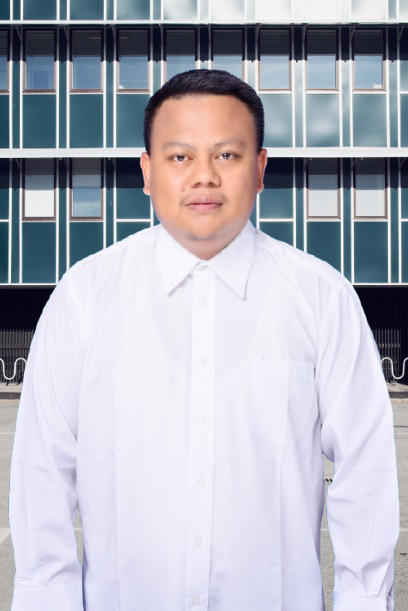

SANDI ARDIANSYAH, S.KOM
Software Engineer & Data Science
Seorang pemimpin teknologi dengan pengalaman sebagai Chief Technology Officer (CTO), Manajer Produksi, dan Konsultan IT. Memiliki kombinasi unik antara keahlian teknis dalam Software Engineering, Data Science, dan Business Intelligence, serta kemampuan manajerial yang teruji dalam Project Management dan Leadership.
Berpengalaman dalam manajemen pengembangan produk, arsitektur database dan kepemimpinan multidisiplin dengan fokus pemanfaatan inovasi data untuk mengoptimalkan kinerja operasional serta target strategis organisasi.
Pengalaman Kerja
Rekam jejak profesional dan kepemimpinan di industri teknologi
Manajer Produksi
CV. Sandi Sukses Teknologi
Mengelola proyek IT kompleks dengan tim berisi 8+ orang menggunakan metodologi Project Management.
Chief Technology Officer (CTO)
APIK Technology
Berhasil memimpin transformasi digital sebagai CTO yang meningkatkan efisiensi sistem secara menyeluruh.
Konsultan IT
Jafar Group
Konsultan IT dan IT Support, membuat aplikasi administrasi dan penjualan untuk beberapa lini usaha serta bertindak sebagai tim audit eksternal perusahaan.
Kemampuan & Bahasa
Keahlian teknis, manajerial, dan kompetensi bahasa
Technical Skills
Leadership & Management
Bahasa
Pendidikan
Latar belakang pendidikan formal dan pencapaian akademik
Sarjana Komputer (S.Kom)
Sistem Informasi
STMIK Triguna Dharma
Sekolah Menengah Atas (SMA)
Ilmu Pengetahuan Alam (IPA)
SMA N.2 BP. Mandoge